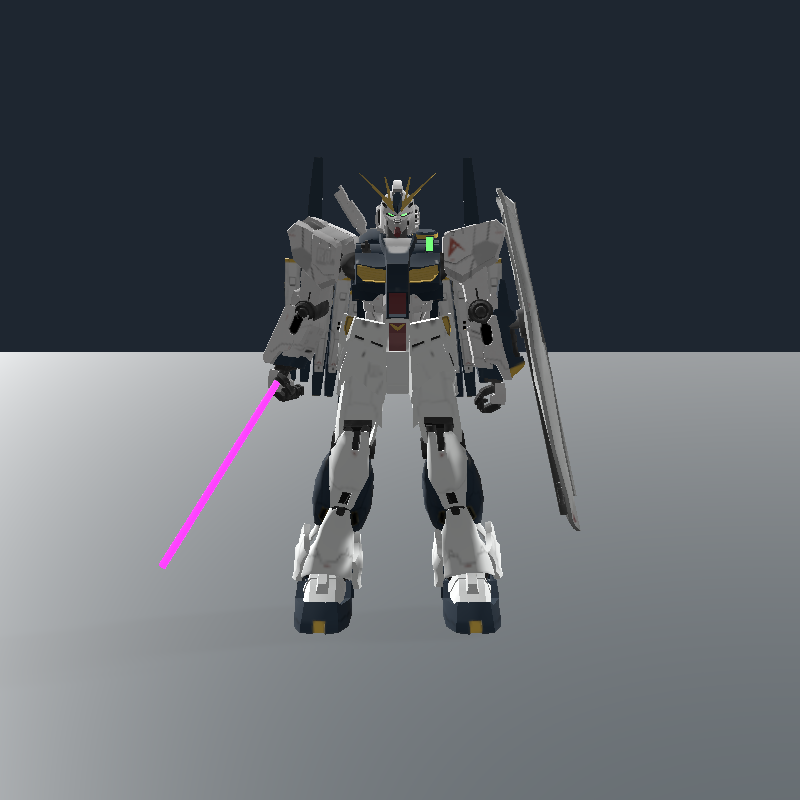
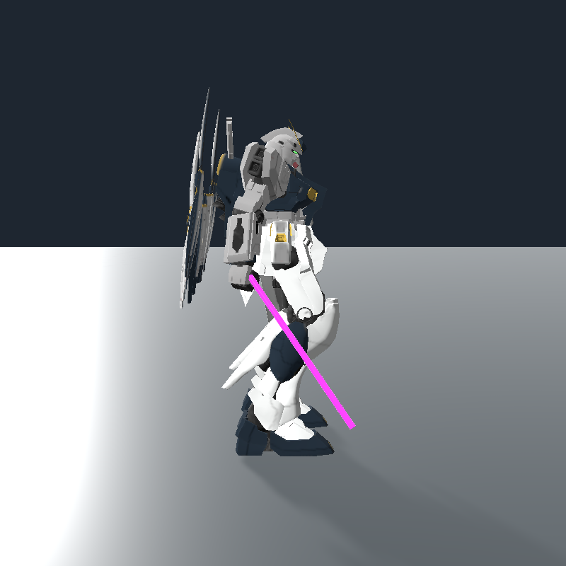
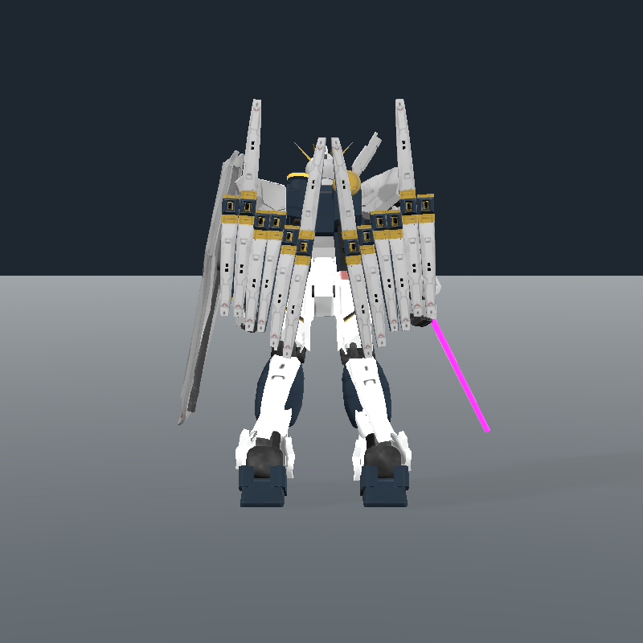
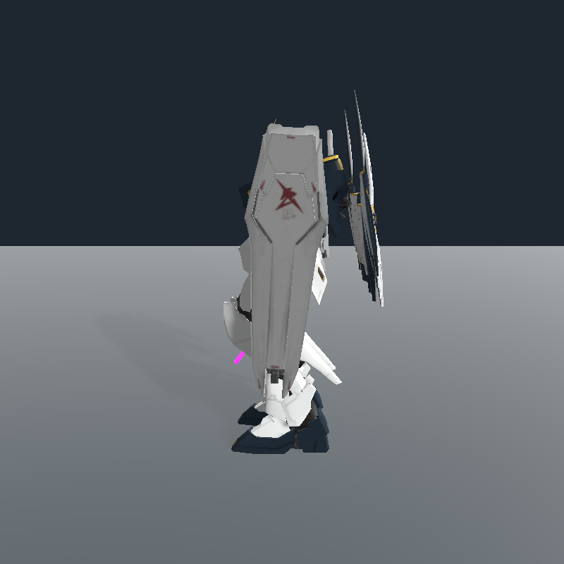
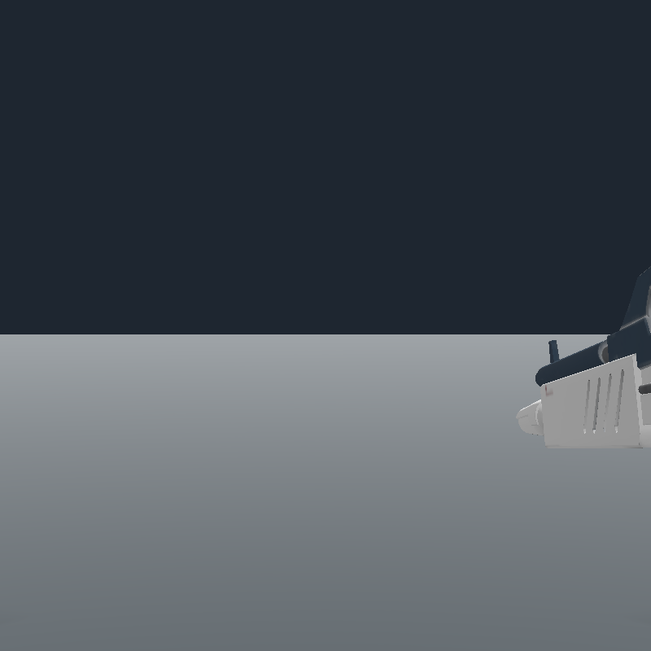
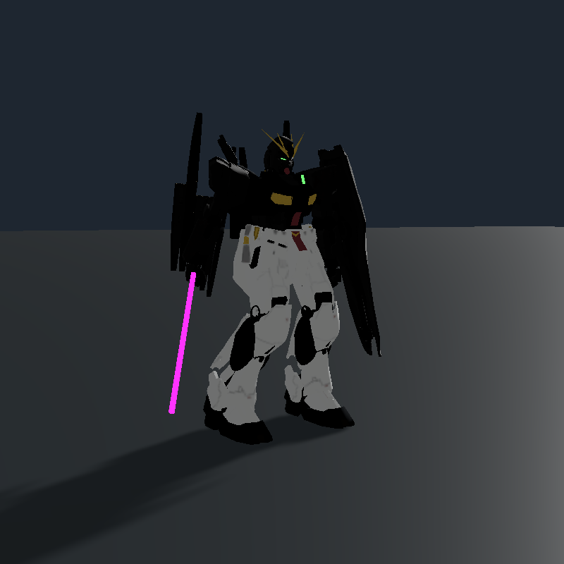

RX-93 ν / Nu / 牛高达 · 0.21.0。作为独立第三机型接入，完全体和试验体保留。
下列画面来自实际游戏 Unity / PhysX 引擎，使用原配色贴图与脚本控制。尚未代替真人驾驶、真实双客户端联机或旧存档实机验收。
WASD 行走 · Shift＋前进滑行 · Q 起降 · 左 Alt 跨越 · 左键剑击／重劈 · 右键格挡 · F 光束炮 · G 导弹 · V 瞄准镜。






模型：Ryanwill679，CC BY 4.0。源 WINGS 坐标异常，经等比修正后固定挂载；光剑为补充制作。背包不分离，本版未新增独立浮游炮 AI。究极体当前没有专用 LOD，多机同屏性能仍待实测。